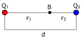
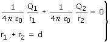
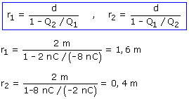

El potencial se anula en un punto B situado entre las cargas y más cerca de la menor (Q2)


En la expresión del potencial las cargas van con signo
Resolviendo el sistema:

El potencial se anula en un punto B situado a 1.6 m de Q1 y a 0.4 m de Q2.